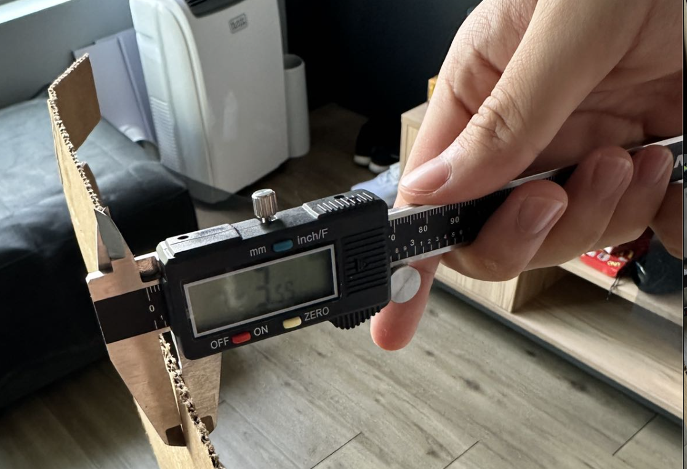
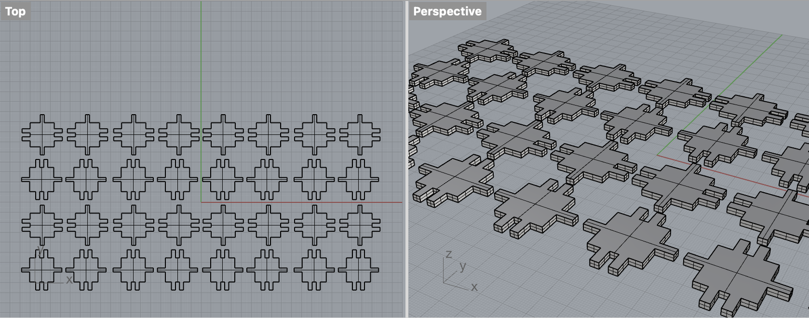
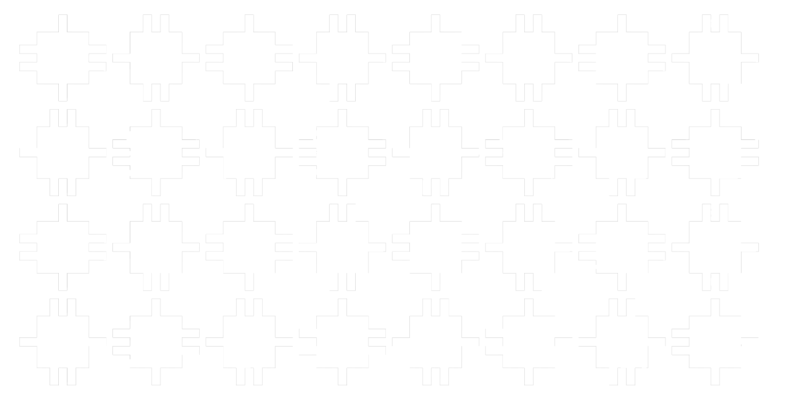
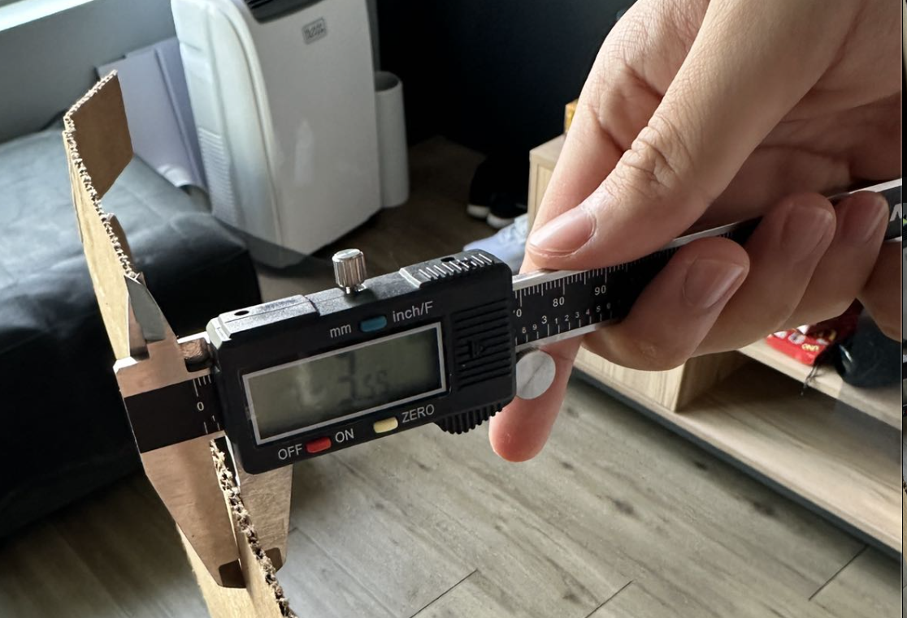
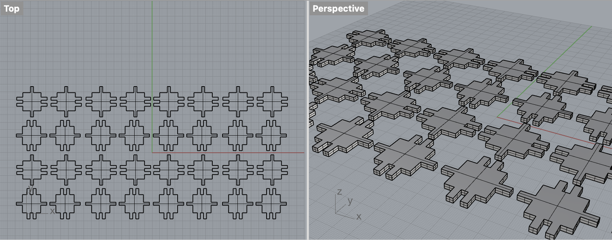
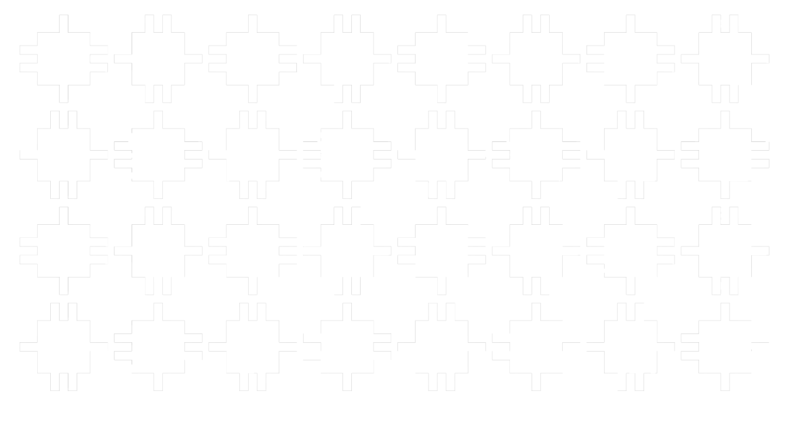

This is just a placeholder before I laser cutted the design.
I started with recalling a box I made previously with a laser cutter when I was in high school. I barely
remembered I used protrudes and sunkens at the edges to make sure those 6 pieces can be put together and
pressed to build a box. So I started with thinking about using protrudes and sunkens to make sure I can at
least use those 30 pieces to build several "boxes".
Then, I thought about how to make them "ubiquitous" so that I could have various ways to put them together later. I would like to add an additional way to put pieces together, so I measured the thickness of the cardboard I would use later to laser cut. It turned out to be 3mm. Then I changed the widths of all the sunkens and protrudes to 3mm, so that I can press and fit two pieces with a 90 degree of rotation later.  This is how the 32 pieces look like in Rhino:  I turned the 3d models into 2d graphs in Illustrator in order to prepare them for laser cutting. In order to save more space while cutting, I changed the layouts so that protrudes and sunkens of all pieces are matched together to reduce the paddings between pieces. This is how it looks like in Illustrator before being printed. 
Then, I thought about how to make them "ubiquitous" so that I could have various ways to put them together later. I would like to add an additional way to put pieces together, so I measured the thickness of the cardboard I would use later to laser cut. It turned out to be 3mm. Then I changed the widths of all the sunkens and protrudes to 3mm, so that I can press and fit two pieces with a 90 degree of rotation later.  This is how the 32 pieces look like in Rhino:  I turned the 3d models into 2d graphs in Illustrator in order to prepare them for laser cutting. In order to save more space while cutting, I changed the layouts so that protrudes and sunkens of all pieces are matched together to reduce the paddings between pieces. This is how it looks like in Illustrator before being printed. 